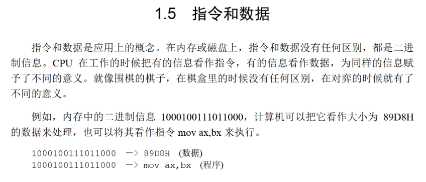
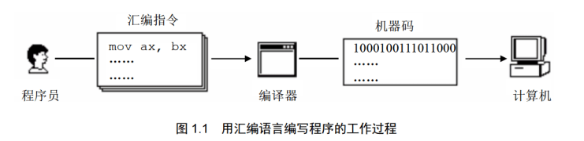

视频
从机器语言到汇编语言
机器语言，过于繁琐和难以编写。
汇编是什么？
实际上就是机器语言的助记符，给机器码起不同的有意义的名字
汇编语言的组成
- 汇编指令（核心）：机器码的助记符，有对应的机器码
- 伪指令：没有对应的机器码，计算机并不执行，由编译器执行
- 其他符号，由编译器识别，没有对应的机器码
CPU、寄存器与内存
CPU负责运算和指令执行
内存帮助CPU读取存储数据，CPU通过寻址来访问内存，进行数据读写
为了效率，寄存器充当暂存
内存之中存什么
指令和数据都有 
存储单元
存储器被划分为若干个存储单元，每个存1Byte
CPU对存储器的读写
存储单元被按顺序编号，编号就是地址
CPU要从内存中读取数据，就需要地址
因此需要三种信息：
- 地址信息
- 控制信息
- 数据信息
小结
汇编指令和机器指令一一对应，每一种CPU都有自己的汇编指令集
扩展知识
大部分为计组的内容。
书

总线
需要知道地址总线、数据总线、控制总线，其宽度对应的内容。
检测点1.1
- $1KB=1024*8 bit=2^{13} bit$, 宽度为13
- 1024，0-1023
- 8192，1024
- $2^{30},2^{20},2^{10}$
- 64,1,16,4
- 1,1,2,4
- 512,256
- 二进制
其他
后面还有一些OS的知识，学过的应该不需要再看了